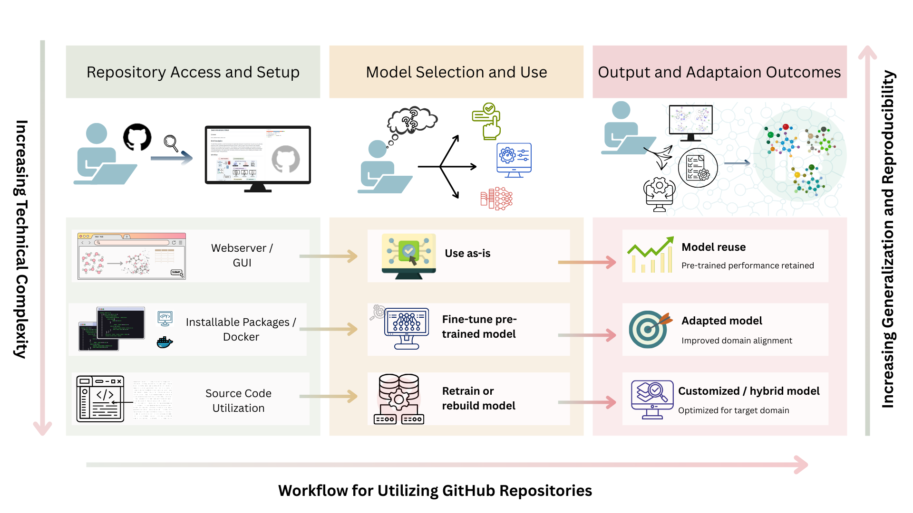

Okay, real talk. If you work in AI for drug discovery and you have not spent time on GitHub, you are missing the point. During the recent hackathon at Insilico Medicine and through a lot of my recent work, one thing kept showing up again and again. Code is now just as important as your paper.
A predictive model in a publication is great. A working GitHub repo that runs, explains, and evolves is better. That is how real science moves forward. Transparency, sharing, and building on what came before.
We have written an editorial that is in review showing how GitHub usage is growing in drug discovery, with about a 60% jump in publications that reference it from 2023 to 2024. That is significant.
What is GitHub and why it matters here
GitHub is a platform that hosts code and manages change using Git. It helps teams track edits, review work, and collaborate in the open. For drug discovery, that matters because AI projects include complex software stacks and data that must be easy to find, access, interoperate with, and reuse. These are the FAIR principles. Containers like Docker and Singularity package code with exact dependencies so other labs can run the same workflow. Together with GitHub, this makes results reproducible and lets peers inspect, confirm, and build on prior work.
- FAIR means findable, accessible, interoperable, and reusable so others can use and extend your work.
- Containers bundle code and dependencies which is critical with version sensitive stacks like RDKit, PyTorch, or docking engines.
- Version control tracks changes and supports collaboration. GitHub is widely used in research because it makes sharing and reproducibility straightforward.
Why GitHub matters for new researchers
In simple terms:
- You will run into it
- It looks confusing at first
- And yes, you will need it anyway
The first time I opened a GitHub repo, it felt like walking into a foreign city with no map. Then the basics clicked:
- README.md is your guidebook. If it is clear, you are good. If it is vague, brace yourself.
- Issues and pull requests are like lab meeting notes. This is where the real action happens.
A simple GitHub workflow that works

- 1) Discover tools with clear keywords like ligand binding prediction or generative molecule design.
- 2) Assess the repo. Is it maintained? Is the documentation clear? Does it include Docker or Conda files?
- 3) Engage by running examples. Test it. Break it. See what happens when you tweak it.
The goal is not just to use code. It is to understand it, reuse it, and improve it. That is how we move forward.
The bigger picture
Imagine this. Every AI model in every paper backed by a clean, documented, reproducible GitHub repo. That is the future we should aim for.
If you are new to research or just getting started, open that repo. Clone that project. Break it, fix it, learn from it. It is all part of the process.
Happy coding and til next time